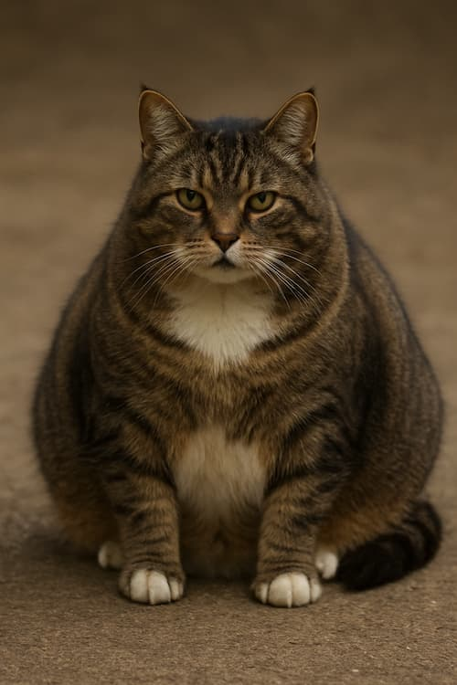
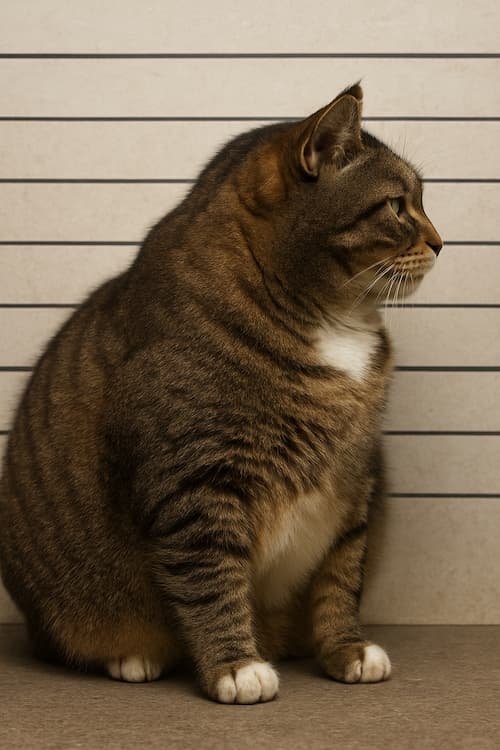

Kvalifikationer:
Han er blevet lidt tykkere med årene, en kat på 8-9 år der engang var frisk og nysgerrig, men nu mest ligner en der har valgt sofaen som livsstil. Han er ikke gammel, bare færdig med at prøve. Hans bror forsvandt for nogle år siden, og siden da har han aldrig helt været den samme. I stedet spiser han, tigger, maser, fylder og efterlader hår nok til at strikke en sweater. Han kradser på døren som om han længes efter frihed, men fem minutter senere vil han ind igen, for derude var der heller ikke noget. En kat der har set verden og besluttet, at den ikke var værd at holde sig vågen for.
 Andre egenskaber: